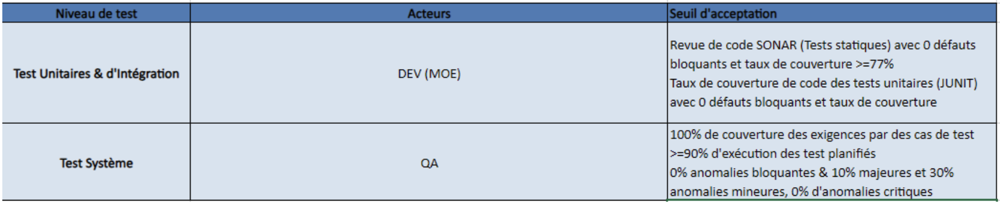
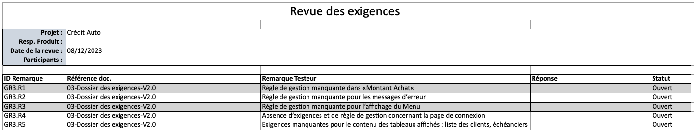
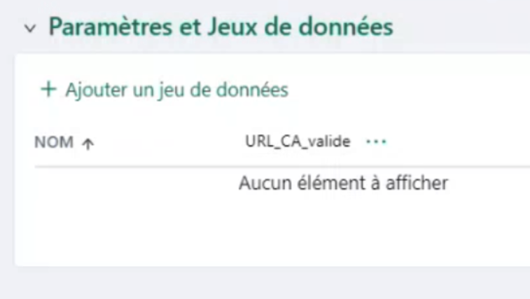
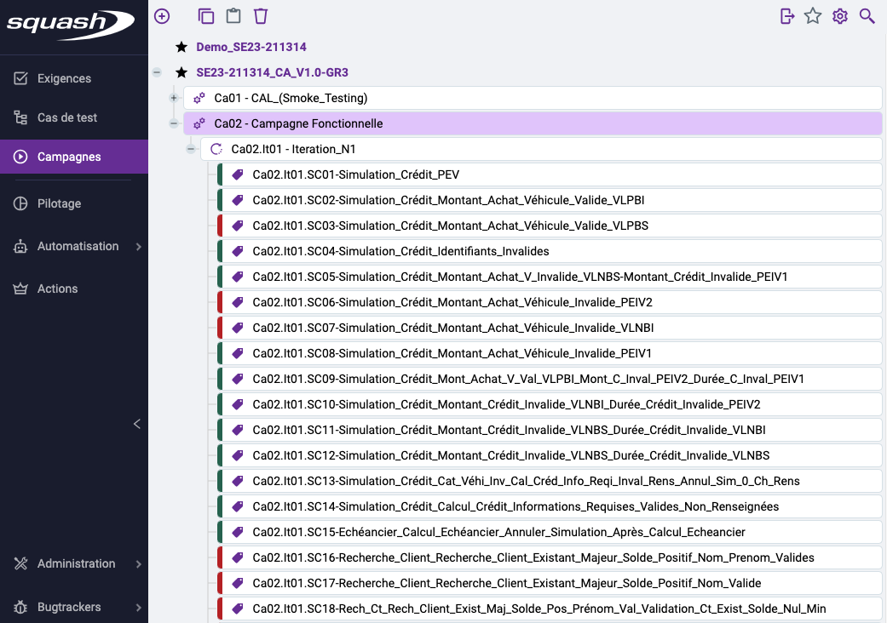
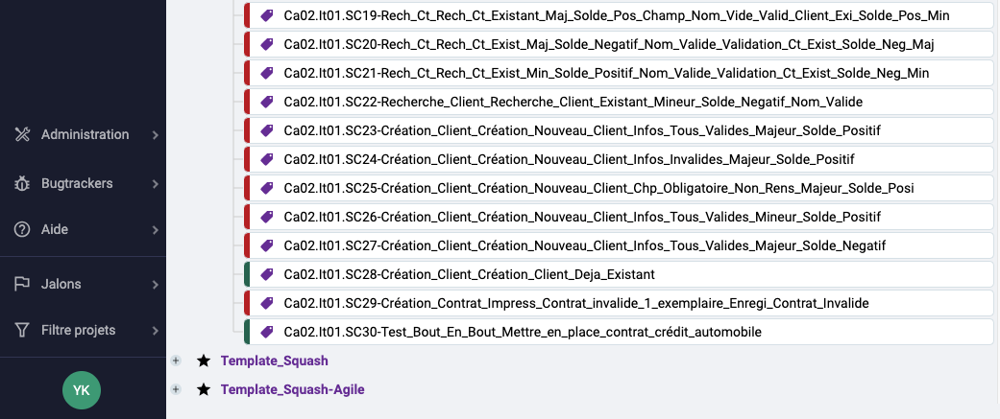
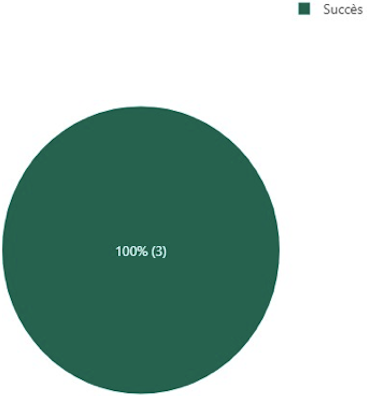
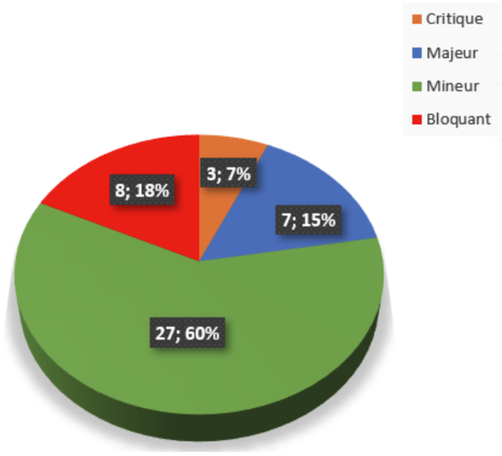

Projet réalisé en 2024, pendant mon parcours de formation "POE Testeur Logiciel", dans le centre M2I Formation.
Le projet consiste en la réalisation des activités de Test Système de la solution web Crédit Auto, dont voici la consigne :
"Dans le cadre de son positionnement sur le marché de crédit automobile, la » BANQUE-M » souhaite mettre en place une solution de crédit automobile.
Vous faites partie d’une équipe QA chargé de la réalisation des Tests de l’application crédit auto soutenue par la « BANQUE-M ». Le développement de la solution crédit auto est réalisé en Cycle Séquentiel « V » et votre équipe QA est chargé de la réalisation des Tests Système, tests de bout en bout.
Après la réalisation du plan de test maître par le Test Manager, il vous est demandé la réalisation des activités de Tests Système (manuel) de l'application Web crédit auto. "
Périmètre de Test
Le 1er cas d’utilisation : UC1-Mettre en place un contrat de crédit automobile.
Environnement technologique
Squash TM, Mantis BT, UML, Draw.io, Bizagi, Xmind, Windows, MS Office, MacOS
Base de Test
01 - Expression du Besoin-V2.0 02 - Projet Crédit Auto - Maquettage-V2.0 03 - Dossier des exigences-V2.0 04 - Fiche Use Case - Mettre en place un contrat de crédit automobile-V2.0 05 - Accès_Environnement_de_Test
Rôle
Testeur
Effectif du groupe
4 Testeurs
Année
2024
Type de Test
Manuel
Niveau de Test
Système
Total Exigences
27
Total Cas de Tests
91
Total Suites de Tests
30
Sommaire
Présentation du projet
Processus de test
01. Planification des Tests
- Choix des outils
- Critères d'entrée et de sortie
02. Analyse de Test
- Revue documentaire
- Diagramme de cas d’utilisation
- Modélisation BPMN
- Référentiel des exigences
03. Conception des Tests
- Mise en place du référentiel
- Couverture des exigences
- Traçabilités
- Conception des cas de test
- Jeux de données logiques
- Environnement de test
04. Implémentation des Tests
- Procédure de Test
- Campagnes
- Campagne CAL
- Campagne Fonctionnelle
- Jeux de données physiques
- Environnement de test
- Critères d'entrée
05. Exécution des Tests
- Campagne CAL
- Campagne Fonctionnelle
- Anomalies
- Rapport d'exécution des tests
06. Suivi et Contrôle des Tests
- Indicateurs pour les Tests
- Indicateurs pour les Exigences
- Indicateurs pour les Anomalies
07. Clôture des Test
- Bilan de Synthèse
- Décision : « Go/NoGo »
Présentation du projet
01. Contexte
BANQUE-M présentait un faible taux de pénétration dans le secteur de l’automobile (crédit automobile). Pour y remédier, la banque a décidé de lancer le projet « Crédit Auto ».
Les ambitions de l'application :
- Repositionner l’activité de BANQUE-M dans le domaine du Crédit Automobile
- Elargir la gamme de produits BANQUE-M
- Prendre des parts de marché à ses concurrents actuels
Les objectifs de l'application :
- Proposer un produit permettant de financer l'achat d'un véhicule neuf de catégorie A ou B
- Offrir des locations de véhicule automobile à tarifs préférentiels et selon les conditions de durée et de fréquence définies.
02. Périmètre
"Crédit Auto" sera destiné à la clientèle des particuliers résidant en France. La commercialisation s'effectuera via les chargés de clientèle en agence.
Un client pourra :
Financer l'achat d'un véhicule de catégorie A ou B
Le montant du crédit devra représenter au minimum 80% du prix du véhicule à régler par le client avec un plancher de 5.000 euros

Le montant plafond du crédit autorisé est de 40.000 euros
Le crédit s'effectuera sur une période de 12 mois minimum et 48 mois maximum
Processus de Test
01. Planification des Tests
Objectif : Documenter la façon d’organiser les tests sur le projet
Ici, le Plan de test Maitre avait déjà été réalisé par le Test Manager.
Il ne nous restait plus qu’à réaliser le Plan de Test par Niveau de Test, à savoir identifier les critères d’entrée et les critères de sortie de notre niveau de test, le test Système, puis à choisir les outils pour mener à bien nos activités de test.
Critères d’entrée et de sortie
Critères d'entrée
Critères de sortie
Choix des outils :
- Squash TM : Outil
de
gestion des Tests
- Mantis BT: Outil
de
gestion des anomalies
- Bizagi: Outil de
modélisation des processus Métier
- Xmind: Outil de
Mind-Mapping
- Draw.io: logiciel
de
dessin graphique
- Squash TM : Outil de gestion des Tests
- Mantis BT: Outil de gestion des anomalies
- Bizagi: Outil de modélisation des processus Métier
- Xmind: Outil de Mind-Mapping
- Draw.io: logiciel de dessin graphique
02. Analyse de Test
Objectif : Analyser la base de test pour identifier les conditions de test.
Revue documentaire
Revue menée : Relecture technique (Walk-Through)
Test statique mené afin de mettre en lumière d’éventuels défauts significatifs, très tôt dans le cycle de développement logiciel.
Les documents de la base de test ont été lu, évalués et les défauts trouvés, enregistrés dans le document "Revue des exigences".
Diagramme de cas d’utilisation
Diagramme réalisé afin d’identifier les acteurs, les cas d’utilisation et leurs associations.
Il y a 4 acteurs :
- Gestionnaire de credit : met en place le contrat de credit automobile
- Responsable crédit : Produit des statistiques et supervise les contrats de crédit
- Administrateur Crédit Auto : administrateur de l’application
- Loueur automobile partenaire : vérifie si un client a un contrat en cours
Les users cases sont regroupés en packages :
- Gestion contrat de crédit Auto
- Gestion des statistiques
- Paramétrage crédit Auto
- Gestion location automobile
Modélisation BPMN
Un diagramme Business Process Model and Notation (BPMN), a été réalisé dans l’objectif d’obtenir une représentation visuelle du processus métier : « UC1-Mettre en place un contrat de crédit automobile. ».
Il y a 3 acteurs :
- Le client
- Le chargé de clientèle
- Le Backoffice
Les étapes du processus :
- 01. Le client fait une demande de crédit
- 02. Le chargé de clientèle vérifie l'adéquation du besoin
- 03. Adéquation ?
Non : il n'y a pas d'adéquation, le processus s’arrête. Oui : il y a adéquation, la simulation est réalisée, le processus est poursuivi. - 04. Le chargé de clientèle réalise la simulation.
- 05. Intéressé par la simulation ?
Non, le processus s’arrête. Oui, le processus est poursuivi et le chargé de clientèle vérifie l’acceptabilité du dossier de crédit. - 07. Dossier acceptable ?
Non, le processus s’arrête. Oui, le processus est poursuivi et le chargé de clientèle collecte les documents justificatifs, établit et édite 2 exemplaires du contrat de crédit et imprime le contrat. - 08. Contrat signé ? Non, le processus prend fin Oui, le processus est poursuivi
- 09. Le chargée de clientèle numérise le contrat
- 10. Et le contrat est enregistré dans le backoffice.
Référentiel des exigences
L’objectif de cette étape est l’identification et la structuration des exigences (conditions de test) en respectant un template prédéfini.
Le resultat obtenu est un mindmap représentant la globalité du produit.
On y retrouve :
- 01. Le Nom du projet
- 02. Le Types d’Exigences
- 03. Les Packages (Modules)
- 04. Les Macro-Fonctions
- 05. Les Fonctions
- 06. Les Exigences
03. Conception des Tests
Objectif : Concevoir les tests, données et environnements.
Conception de tests de haut niveau, préparation des jeux de données logiques et de l’environnement de test.
Mise en place du référentiel des Exigences
Dans le logiciel Squash TM, onglet "Exigences", l’arborescence du référentiel des Exigences a été reproduite en suivant l’ordre suivant : Nom du projet, type d'exigence, packages, macro-fonctions, fonctions et exigences.
Exemple : Exigences de la Fonction « PK02.MF01.F01.Simulation_Crédit »
Couverture des exigences et traçabilité
Dans le logiciel Squash, pour chaque exigence de l’onglet "Exigences", un ou plusieurs cas de test seront créer dans l’onglet "Cas de test". Chaque cas de test sera associé informatiquement à son exigence.
Exemple : Cas de test des Exigences de la Fonction « PK02.MF01.F01.Simulation_Crédit »
Conception des cas de test
Trois techniques de test de type Boite Noir ont été utilisées :
- Table de décision
- Partition d’Équivalence
- Analyse des valeurs limites, a 1 ou 2 valeurs
Jeux de données logiques
Ici, pour la conception des cas de tests de haut niveau, des données de test logiques ont été préparées, dans les options "Parametres et jeux de données" des pas de test des cas de test.

Environnement de test
À cette étapes, il faut concevoir l'environnement de test, mais dans notre cas, il était déjà conçu .
04. Implémentation des Tests
Objectif : Se mettre en situation d’exécuter les tests.
Conception de tests de bas niveau, insertion des jeux de données physiques et validation de l'envirionnement de test.
Procédure de Test
Une procédure de test manuel a été créer.
On y retrouve les cas de test organisés en fonction des écrans :
- Simulation Crédit
- Echéancier
- Recherche Client
- Création Client
- Création Contrat
Les cas de test composants les scénarios de test couvrent les différents scénarios d’utilisation :
- Nominaux (SCN)
- Alternatifs (SCA)
- Exception (SCE)
Extrait de la procédure de Test : Écran "Simulation_Crédit"
Campagnes
Dans le logiciel Squash, onglet « Campagnes », 2 campagnes ont été préparées :
- Campagne CAL (Conditions Avant Livraison)
- Campagne Fonctionnelle
Chaque campagne est composée d’itérations contenant les scénarios qui leur sont associés :
Campagne CAL
Campagne CAL ou Test de fumée (Smoke Testing). Test préliminaire effectué pour vérifier les fonctionnalités de base de l’application.
Les scénarios de test de la campagne CAL
Campagne Fonctionnelle
Campagne principale, test de bout en bout (end to end). On y retrouve les suites de cas test de bas niveau, relatives au périmètre de test du 1er cas d’utilisation : « UC1-Mettre en place un contrat de crédit automobile ».
Les scénarios de test réalisés pour la campagne Fonctionnelle
 Jeux de données physiques
Pour la conception des cas de tests de bas niveau, des données de test physiques ont été ajoutées, dans les options des pas de test des cas de test.
Exemple :

Environnement de Test
Dans notre cas, la validation de l’environnement de test avait déjà été réalisée.
Critères d'entrée
Ici, les critères d'entrée étant satisfaits, nous pouvons passer à l'étape suivante, l'étape d'éxécution.
05. Exécution des Tests
Objectif : Exécuter, enregistrer les résultats et signaler les défauts.
Exécution des tests Manuels dans Squash, « Module Campagne » Formalisation des rapports d’anomalie sur Mantis BT.
Campagne CAL
Exécution des suites de test de la compagne CAL Nous avons testé les fonctionnalités basiques d’authentification, pour nous assurer que le système réagissait comme attendu.
Composition d'une suite de suite de cette campagne
Campagne Fonctionnelle
Exécution des suites de test de la compagne fonctionnelle, relatives au périmètre de test du 1er cas d’utilisation : « UC1-Mettre en place un contrat de crédit automobile ».
Composition d'une suite de suite de cette campagne
Anomalies
Les anomalies rencontrées ont été enregistrées dans des rapports d'anomalies dans Mantis BT
Rapport d'exécution des tests
Campagne CAL
Campagne Fonctionnelle
Rapport d"anomalie
Nous avons 14 types différents d'anomalies répartis parmi :
- 2 critiques
- 3 majeurs
- 9 mineurs
06. Suivi et contrôle des Tests
Objectif : Suivre la mise en oeuvre de ce qui est prévu et rectifier si nécessaire.
Production des métriques de test via le module « Pilotage » de Squash TM. Au moins 3 types d’indicateurs : indicateurs pour les Exigences, les Tests & les Anomalies.
Indicateurs pour les Tests
Répartition des Cas de Test par Type de fonctionnalité
Campagne fonctionnelle
Inventaire des tests par suite de tests : Itération 1
Répartition des suites de Tests par criticité
Indicateurs pour les Exigences
Statut d'exécution des Exigences pour chaque écran
Ecran Simulation
Ecran Echéancier
Ecran Recherche Client

Ecran Création Client
Ecran Création Contrat
Indicateurs pour les Anomalies
Rapport des anomalies
Anomalies par severité
07. Clôture des Tests
Objectif : Faire un bilan sur les tests.
Formalisation du Bilan de synthèse de test Décision : PV de Test « Go/NoGo » ;
Bilan de Synthèse
Les tests ont été structurés sous la forme de Campagne Fonctionnelle. La campagne fonctionnelle a été déroulée en 1 itération Lors de cette itération nous avons obtenu :
- 100% de couverture des exigences
- 83% d'exécution de test
Et détecté un total de 45 anomalies :
- 8 bloquantes
- 3 critiques
- 7 majeures
- 27 mineures
Décision : « Go/NoGo »
Critères de sortie
Compte tenu du taux d'exécution et des anomalies, on peut estimer que les critères de sorties ne sont pas respectés puisque que :
On peut donc se prononcer en faveur d’un "NO GO" et se diriger vers la réalisation d’une autre itération.